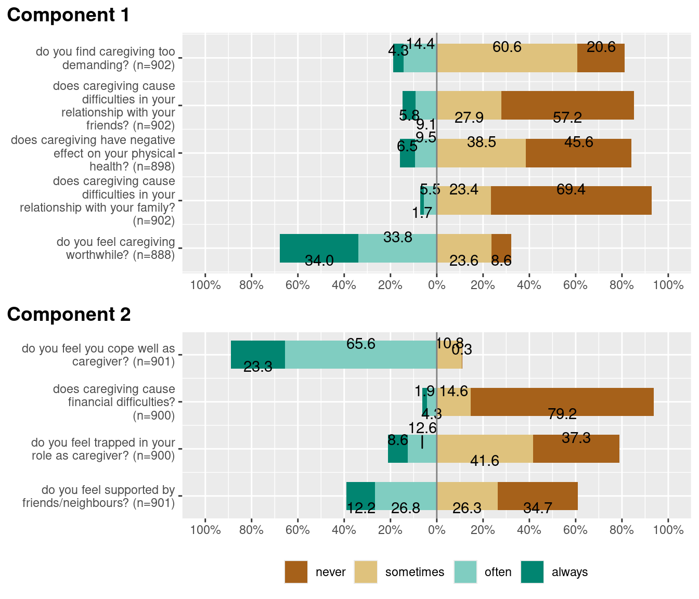
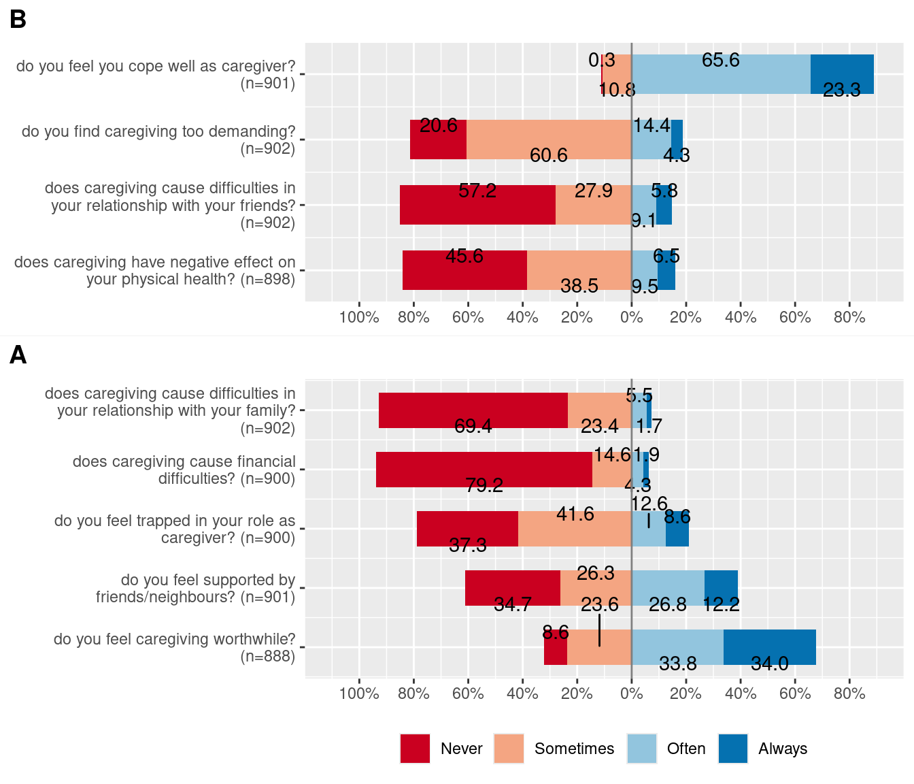
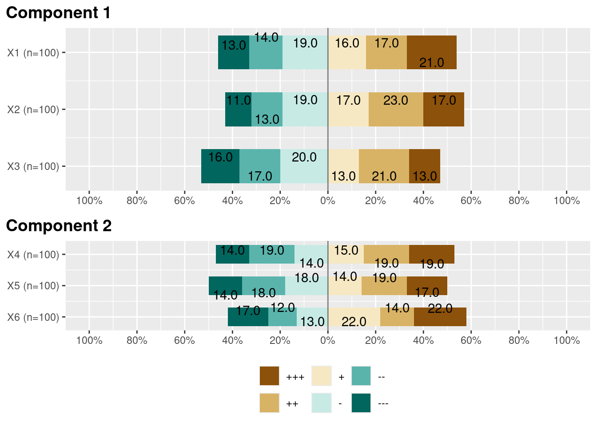
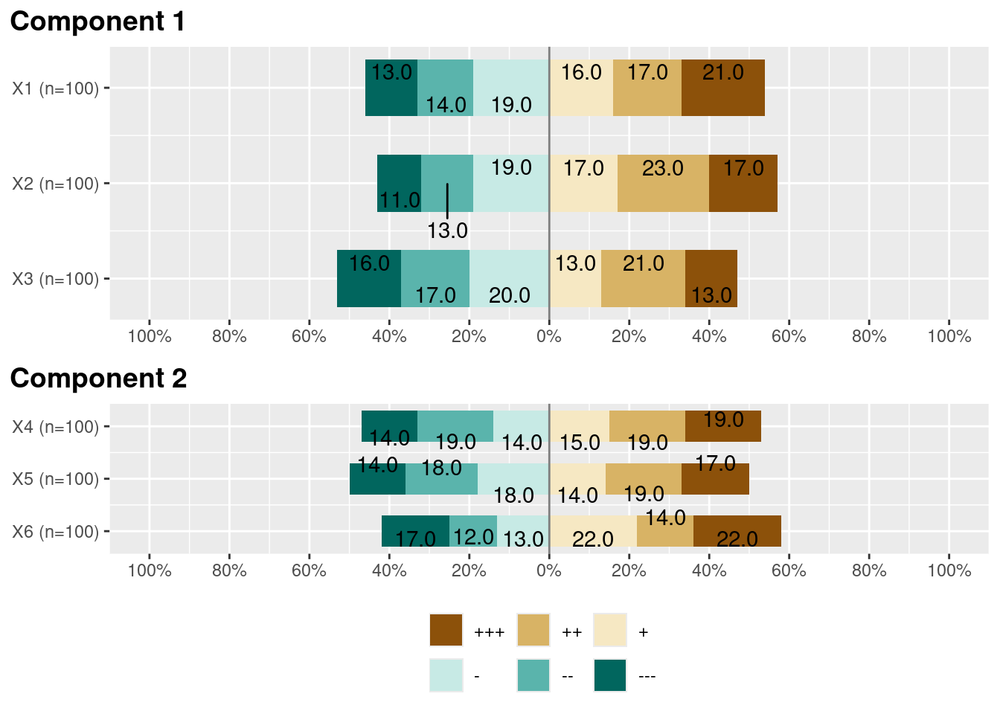

Plotting Likert Scales
Daniel Lüdecke
2022-11-19
Source:vignettes/plot_likert_scales.Rmd
plot_likert_scales.Rmd
library(dplyr)
library(sjPlot)
library(sjmisc)
library(parameters)
data(efc)
# find all variables from COPE-Index, which all have a "cop" in their
# variable name, and then plot that subset as likert-plot
mydf <- find_var(efc, pattern = "cop", out = "df")
plot_likert(mydf)
plot_likert(
mydf,
grid.range = c(1.2, 1.4),
expand.grid = FALSE,
values = "sum.outside",
show.prc.sign = TRUE
)
# Plot in groups
plot_likert(mydf, groups = c(2, 1, 1, 1, 1, 2, 2, 2, 1))
pca <- parameters::principal_components(mydf)
groups <- parameters::closest_component(pca)
plot_likert(mydf, groups = groups)
plot_likert(
mydf,
c(rep("B", 4), rep("A", 5)),
sort.groups = FALSE,
grid.range = c(0.9, 1.1),
geom.colors = "RdBu",
rel_heights = c(6, 8),
wrap.labels = 40,
reverse.scale = TRUE
)
# control legend items
six_cat_example = data.frame(
matrix(sample(1:6, 600, replace = TRUE), ncol = 6)
)
six_cat_example <-
six_cat_example %>%
dplyr::mutate_all( ~ ordered(., labels = c("+++", "++", "+", "-", "--", "---")))
# Old default
plot_likert(
six_cat_example,
groups = c(1, 1, 1, 2, 2, 2),
group.legend.options = list(nrow = 2, byrow = FALSE)
)
# New default
plot_likert(six_cat_example, groups = c(1, 1, 1, 2, 2, 2))